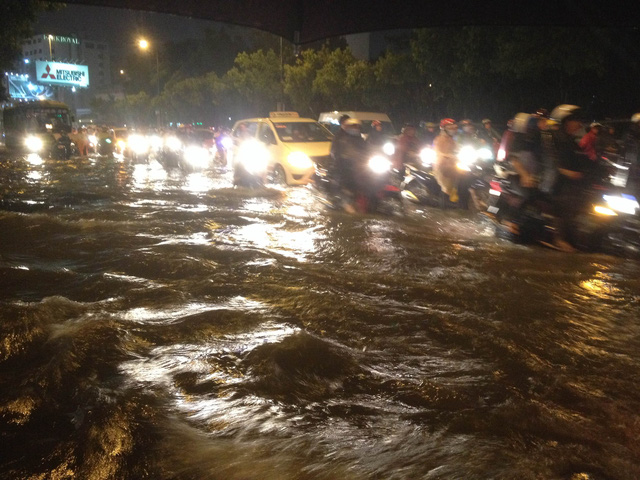

Cơn mưa nặng hạt bắt đầu vào khoảng gần 17h chiều 26/9, kéo dài đến tận thời điểm hiện tại (19h30) vẫn chưa ngớt, đã "biến" Sài Gòn thành biển nước mênh mông, giao thông ùn ứ, tắc nghẽn,..
Theo đó, trên các tuyến đường Phan Xích Long đến đường Phan Đăng Lưu, nước ngập tràn lên trên vỉa hè khiến các phương tiện di chuyển qua lại khó khăn. Nặng nhất là khu đường Phan Xích Long hướng ra các nhánh đường song song như Hoa Lan, Cù lao... dọc đến bờ kênh Nhiêu Lộc đều trong tình ngập hơn nửa bánh xe. Hầu như tất cả các cao ốc dọc theo khu vực này có hầm để xe đều rơi vào tình trạng hầm để xe biến thành... hồ chứa nước. Trong khi đó, không ít nhà dân phải "thi nhau" tát nước từ đường tràn vào... Hàng chục chiến sĩ Cảnh sát PCCC Quận Gò Vấp, Bình Thạnh đã được huy động đến để đến thực hiện việc bơm hút nước ra ngoài. Một số khu vực ngập nặng đã tạm thời bị cúp điện.
